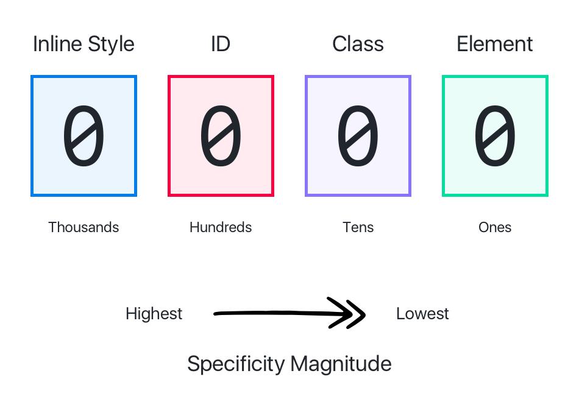

Specifity & Selectors

css_selectors.asp
Selectors
https://www.w3schools.com/cssref/css_selectors.asp
Selectors
https://www.w3schools.com/cssref/Duplicate the values for more intensity
Specifies what to do with the content that cannot enter in the box. It can be overflow-x or overflow-y.
Elements that do not take part in the DOM
<script src="https://kit.fontawesome.com/635c74904b.js" crossorigin="anonymous">
The flex container is divided in main axis (left to right) and cross axis (up to down). It maintains the height of the flex items by changing their width.
The grid container contains the grid cells, which contain a grid item and their children. Also, the grid container is formed by grid tracks (rows and columns). Finally, we can define a grid area when coding and the grid lines (column lines and row lines) are the totally lines in the grid container.
Example: @Media screen and (max-width: 780px) and (orientation; landscape) {}
Transition (shorthand):
https://www.w3schools.com/cssref/
css3_pr_transform.asp
When a link directs you to another place of the site. Scroll-behavior: smooth